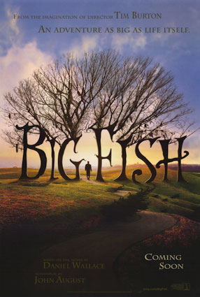

|
|
Film Fragmanı |
bu filmi daha yeni izlemiş olmam çok üzücü. kesinlikle bir çocuk filmi değil. içi
metaforlarladolu. bunları tabii ki filmi izlerken kavrayabilmek çok zor. fakat izledikten sonra bir araştırma yapınca insan hayretler içine giriyor. guillermo del toro 'nun bunları bu kadar başarılı bir şekilde filmin içine yerleştirmesi gerçekten büyük başarı. kurgu çok güzel işlenmiş. gayet akıcı ve mantıklı bir şekilde ilerliyor film.
bunun dışında görüntü yönetimi ve makyaj tasarımı gerçekten çok iyiydi. özellikle the pale man bu yaşımda tüylerimi ürpertti diyebilirim.
 |
 |